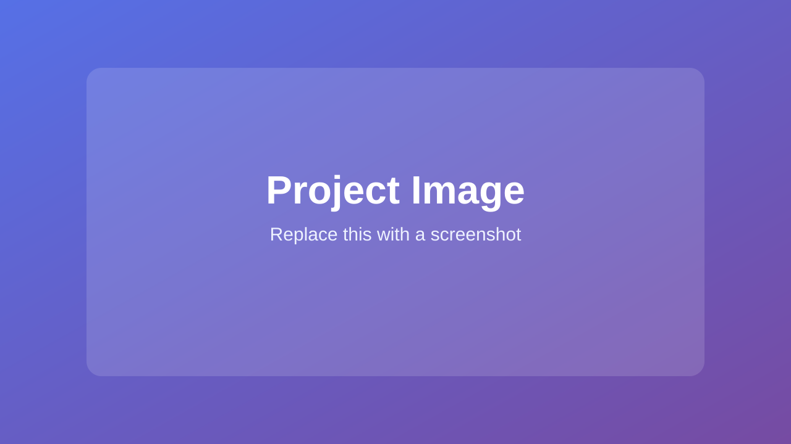

Project category
Project title
A short introduction to what you built and why it matters.

Overview
Describe the project, the problem it solves, and the part you worked on.
My contribution
- Describe a feature you built.
- Explain a challenge you solved.
- Share an outcome or something you learned.